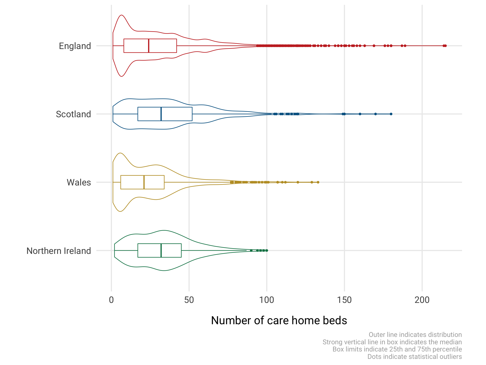
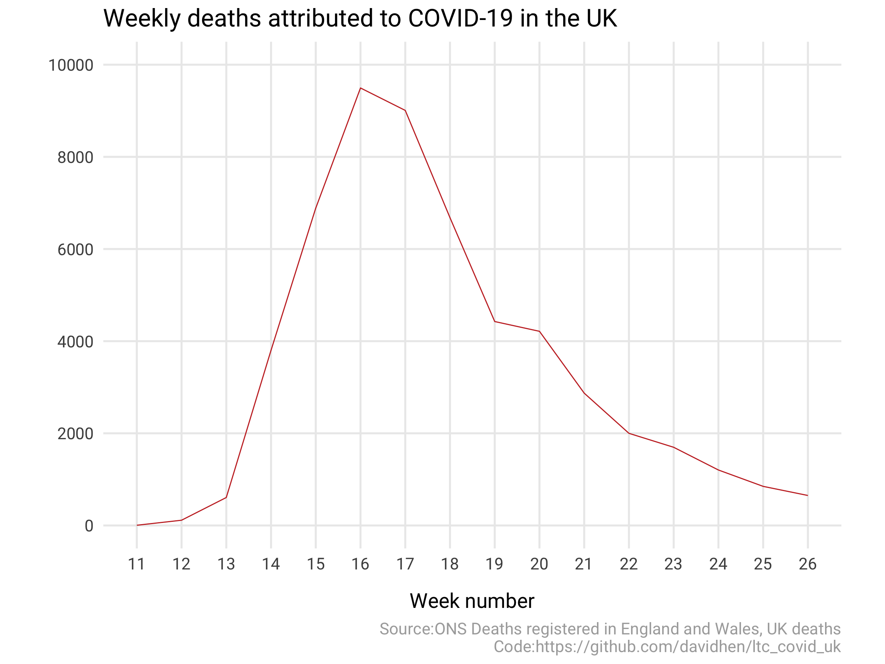
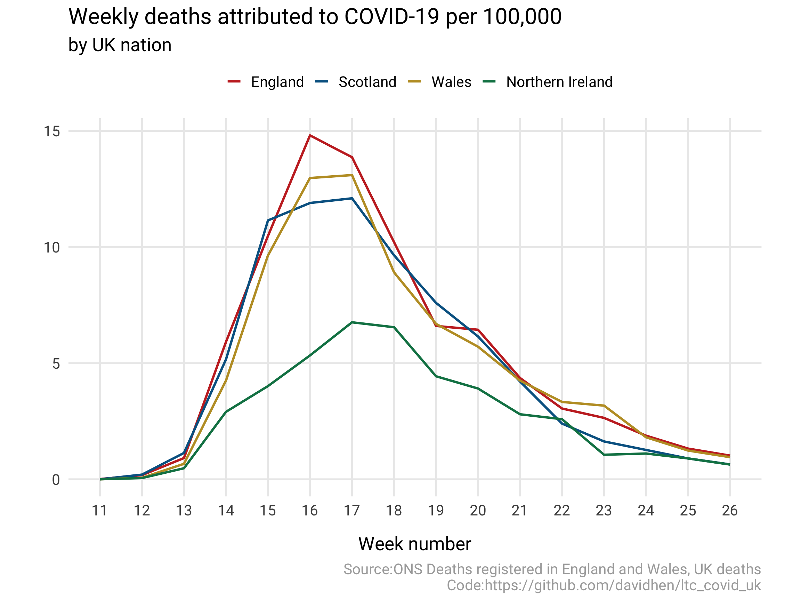

Code for figures and values for Figures 1, 2, and 3.
R packages and helper functions….
library(tidyverse)
library(curl)
library(readxl)
library(forcats)
library(ggthemes)
library(socviz)
library(here)
#Helper function
`%nin%` <- negate(`%in%`)
#Short cut for csv output with html tables
my_datatable <- function(x){
DT::datatable(x, extensions = "Buttons", options = list(dom = "Bfrtip",
buttons = c("csv")))
}
#Baseline plot settings
theme_set(theme_minimal(base_family = "Roboto", base_size = 20) +
theme(panel.grid.minor = element_blank(),
axis.title.y = element_text(margin = margin(0, 20, 0, 0)),
axis.title.x = element_text(margin = margin(20, 0, 0, 0)),
plot.caption = element_text(colour = "#AAAAAA"),
plot.margin = margin(3,15,3,3,"mm")))
#global options for scientific numbers and significant digits.
options(scipen = 10,
digits = 1)Figure 1 shows the distribution of care home size across the 4 nations with violin and boxplots.
The data used to create this plot is derived from information from the relevant Care inspectorates in each nation. These files required some pre-processing which can be found in the care_inspectorate_wrangle.Rmd file. The raw data files are in the raw_data folder. The derived, combined, dataset is imaginatively called uk and is found in the derived_data folder as a feather object.
Note this plot shows the distribution of all adult care homes in each country, not care homes for older people.
uk %>%
ggplot(aes(fct_rev(country), `Care homes beds`, colour = country)) +
geom_violin(alpha = 0.5) +
geom_boxplot(width = 0.2) +
scale_colour_wsj() +
theme(legend.position = "none",
plot.caption = element_text(size = 12)) +
coord_flip() +
labs(x = "",
y = "Number of care home beds",
caption = "Outer line indicates distribution\nStrong vertical line in box indicates the median\nBox limits indicate 25th and 75th percentile\nDots indicate statistical outliers") -> fig_4
fig_4
Some useful summary figures which contribute to Table 1 in the report
This uses all data in the uk data object
uk %>%
group_by(country) %>%
summarise(total_n = n(),
total_beds = sum(`Care homes beds`, na.rm = TRUE)) %>%
mutate(total_n = as.numeric(total_n)) %>%
bind_rows(summarise_all(., funs(if(is.numeric(.)) sum(.) else "Total")))Note 15 care homes in Scotland do not provide total_beds figures.
Care Inspectorate for Wales does not classify care home type by older people so we must remove them from this summary. The code block below shows how we filtered the other nations data to include only care homes for older people. This is subjective and there is no clear documentation or metadata to aid with this. It is also important to note that some care homes may include a mix of older and younger clients.
England: Filter on “Service User Band - Older people” option Scotland: using Subtypes “Older People” and “Respite Care and Short Breaks” Northern Ireland: Categories of care including the letters “I” or “DE” (this reflects how Quality Improvement Authority Northern Ireland subset)
uk %>%
filter(country != "Wales") %>%
filter(case_when(
country == "England" ~ `Service user band - Older People` == "Y",
country == "Scotland" ~ Subtype %in% c("Older People", "Respite Care and Short Breaks"),
country == "Northern Ireland" ~ str_detect(`Categories of Care`, "I") |
str_detect(`Categories of Care`, "DE")
)) %>%
group_by(country) %>%
summarise(total_n = n(),
total_beds = sum(`Care homes beds`, na.rm = TRUE))Note 10 care homes in Scotland do not provide total_beds figures.
Data for Figure 2 & 3 is sourced from the ONS Deaths registered in England and Wales available here
To calculate per 100,000 estimates we used population estimates from here and crudely added them in manually in the code as seen below.
#Assign url for ONS data and download into a temporary file
url <- "https://www.ons.gov.uk/file?uri=%2fpeoplepopulationandcommunity%2fbirthsdeathsandmarriages%2fdeaths%2fdatasets%2fweeklyprovisionalfiguresondeathsregisteredinenglandandwales%2f2020/publishedweek282020.xlsx"
temp <- tempfile()
temp <- curl_download(url=url, destfile=temp, quiet=FALSE)
#Extract weekly data for each country from "UK" Worksheet and tidy up
uk_deaths_data <-
read_xlsx(temp, sheet="UK - Covid-19 - Weekly reg",
range = "A4:AB12") %>%
slice(5:8) %>%
select(-`Week number`) %>%
rename(country = `...2`) %>%
#reshape to long format
pivot_longer(`1`:`26`, names_to = "week_number",
values_to = "covid_deaths") %>%
#coerce week number to integer
mutate(week_number = as.integer(week_number)) %>%
#drop rows before week 11
filter(week_number >= 11) %>%
#coerce country variable to a factor
mutate(country = factor(country,
levels = c("England", "Scotland",
"Wales", "Northern Ireland")),
#manually add in population size
pop = case_when(
country == "England" ~ 56286961,
country == "Wales" ~ 3152879,
country == "Scotland" ~ 5463300,
country == "Northern Ireland" ~ 1893667),
#Calculate deaths per 100,000
deaths_100000 = covid_deaths/pop * 100000)
#Print out the result
uk_deaths_data %>%
round_df() %>%
my_datatable(.)Basic plot of the total number of deaths in each week
uk_deaths_data %>%
#summarise the uk deaths data table
group_by(week_number) %>%
summarise(tot_deaths = sum(covid_deaths)) %>%
#and pipe into the plot
ggplot(aes(week_number, tot_deaths)) +
geom_line(colour = wsj_pal()(1)) +
scale_x_continuous(breaks = scales::pretty_breaks(n = 12)) +
scale_y_continuous(breaks = scales::pretty_breaks(),
limits = c(0, 10000)) +
labs(title = "Weekly deaths attributed to COVID-19 in the UK",
x = "Week number",
y = "",
caption = "Source:ONS Deaths registered in England and Wales, UK deaths\nCode:https://github.com/davidhen/ltc_covid_uk") -> fig_1
fig_1
A figure referenced in the text of the report
Deaths per 100,000 by UK nation. Using same data as above.
uk_deaths_data %>%
ggplot(aes(week_number, deaths_100000, colour = country)) +
geom_line(size = 1.2) +
scale_colour_wsj() +
scale_x_continuous(breaks = scales::pretty_breaks(n = 12)) +
scale_y_continuous(breaks = scales::pretty_breaks()) +
theme(legend.position = "top") +
labs(title = "Weekly deaths attributed to COVID-19 per 100,000",
subtitle = "by UK nation",
x = "Week number",
y = "",
colour = "",
caption = "Source:ONS Deaths registered in England and Wales, UK deaths\nCode:https://github.com/davidhen/ltc_covid_uk") -> fig_2
fig_2
Useful summary figures
uk_deaths_data %>%
group_by(country) %>%
summarise(covid_deaths = sum(covid_deaths),
pop = pop) %>%
distinct() %>%
mutate(total_per_100k = covid_deaths/pop * 100000)More useful summary figs
uk_deaths_data %>%
group_by(country) %>%
summarise(covid_deaths = sum(covid_deaths),
pop = pop) %>%
distinct() %>%
ungroup() %>%
summarise(covid_deaths = sum(covid_deaths),
pop = sum(pop)) %>%
mutate(uk_death_100k = covid_deaths/pop * 100000)## ─ Session info ───────────────────────────────────────────────────────────────
## setting value
## version R version 4.0.2 (2020-06-22)
## os macOS Catalina 10.15.5
## system x86_64, darwin17.0
## ui X11
## language (EN)
## collate en_GB.UTF-8
## ctype en_GB.UTF-8
## tz Europe/London
## date 2020-08-27
##
## ─ Packages ───────────────────────────────────────────────────────────────────
## package * version date lib source
## assertthat 0.2.1 2019-03-21 [1] CRAN (R 4.0.0)
## backports 1.1.8 2020-06-17 [1] CRAN (R 4.0.0)
## blob 1.2.1 2020-01-20 [1] CRAN (R 4.0.0)
## broom 0.7.0 2020-07-09 [1] CRAN (R 4.0.2)
## callr 3.4.3 2020-03-28 [1] CRAN (R 4.0.0)
## cellranger 1.1.0 2016-07-27 [1] CRAN (R 4.0.0)
## cli 2.0.2 2020-02-28 [1] CRAN (R 4.0.0)
## colorspace 1.4-1 2019-03-18 [1] CRAN (R 4.0.0)
## crayon 1.3.4 2017-09-16 [1] CRAN (R 4.0.0)
## crosstalk 1.1.0.1 2020-03-13 [1] CRAN (R 4.0.0)
## curl * 4.3 2019-12-02 [1] CRAN (R 4.0.0)
## DBI 1.1.0 2019-12-15 [1] CRAN (R 4.0.0)
## dbplyr 1.4.4 2020-05-27 [1] CRAN (R 4.0.0)
## desc 1.2.0 2018-05-01 [1] CRAN (R 4.0.0)
## devtools 2.3.1 2020-07-21 [1] CRAN (R 4.0.0)
## digest 0.6.25 2020-02-23 [1] CRAN (R 4.0.0)
## dplyr * 1.0.1 2020-07-31 [1] CRAN (R 4.0.2)
## DT 0.15 2020-08-05 [1] CRAN (R 4.0.2)
## ellipsis 0.3.1 2020-05-15 [1] CRAN (R 4.0.0)
## evaluate 0.14 2019-05-28 [1] CRAN (R 4.0.0)
## fansi 0.4.1 2020-01-08 [1] CRAN (R 4.0.0)
## farver 2.0.3 2020-01-16 [1] CRAN (R 4.0.0)
## feather 0.3.5 2019-09-15 [1] CRAN (R 4.0.0)
## forcats * 0.5.0 2020-03-01 [1] CRAN (R 4.0.0)
## fs 1.5.0 2020-07-31 [1] CRAN (R 4.0.2)
## generics 0.0.2 2018-11-29 [1] CRAN (R 4.0.0)
## ggplot2 * 3.3.2 2020-06-19 [1] CRAN (R 4.0.0)
## ggthemes * 4.2.0 2019-05-13 [1] CRAN (R 4.0.0)
## glue 1.4.1 2020-05-13 [1] CRAN (R 4.0.0)
## gtable 0.3.0 2019-03-25 [1] CRAN (R 4.0.0)
## haven 2.3.1 2020-06-01 [1] CRAN (R 4.0.0)
## here * 0.1 2017-05-28 [1] CRAN (R 4.0.0)
## hms 0.5.3 2020-01-08 [1] CRAN (R 4.0.0)
## htmltools 0.5.0 2020-06-16 [1] CRAN (R 4.0.0)
## htmlwidgets 1.5.1 2019-10-08 [1] CRAN (R 4.0.0)
## httr 1.4.2 2020-07-20 [1] CRAN (R 4.0.0)
## jsonlite 1.7.0 2020-06-25 [1] CRAN (R 4.0.0)
## knitr 1.29 2020-06-23 [1] CRAN (R 4.0.2)
## labeling 0.3 2014-08-23 [1] CRAN (R 4.0.0)
## lifecycle 0.2.0 2020-03-06 [1] CRAN (R 4.0.0)
## lubridate * 1.7.9 2020-06-08 [1] CRAN (R 4.0.2)
## magrittr 1.5 2014-11-22 [1] CRAN (R 4.0.0)
## memoise 1.1.0 2017-04-21 [1] CRAN (R 4.0.0)
## modelr 0.1.8 2020-05-19 [1] CRAN (R 4.0.0)
## munsell 0.5.0 2018-06-12 [1] CRAN (R 4.0.0)
## patchwork * 1.0.1 2020-06-22 [1] CRAN (R 4.0.2)
## pillar 1.4.6 2020-07-10 [1] CRAN (R 4.0.2)
## pkgbuild 1.1.0 2020-07-13 [1] CRAN (R 4.0.2)
## pkgconfig 2.0.3 2019-09-22 [1] CRAN (R 4.0.0)
## pkgload 1.1.0 2020-05-29 [1] CRAN (R 4.0.0)
## prettyunits 1.1.1 2020-01-24 [1] CRAN (R 4.0.0)
## processx 3.4.3 2020-07-05 [1] CRAN (R 4.0.0)
## ps 1.3.4 2020-08-11 [1] CRAN (R 4.0.2)
## purrr * 0.3.4 2020-04-17 [1] CRAN (R 4.0.0)
## R6 2.4.1 2019-11-12 [1] CRAN (R 4.0.0)
## Rcpp 1.0.5 2020-07-06 [1] CRAN (R 4.0.0)
## readODS * 1.7.0 2020-07-10 [1] CRAN (R 4.0.2)
## readr * 1.3.1 2018-12-21 [1] CRAN (R 4.0.0)
## readxl * 1.3.1 2019-03-13 [1] CRAN (R 4.0.0)
## rematch 1.0.1 2016-04-21 [1] CRAN (R 4.0.0)
## remotes 2.2.0 2020-07-21 [1] CRAN (R 4.0.0)
## reprex 0.3.0 2019-05-16 [1] CRAN (R 4.0.0)
## rlang 0.4.7 2020-07-09 [1] CRAN (R 4.0.0)
## rmarkdown 2.3 2020-06-18 [1] CRAN (R 4.0.2)
## rprojroot 1.3-2 2018-01-03 [1] CRAN (R 4.0.0)
## rstudioapi 0.11 2020-02-07 [1] CRAN (R 4.0.0)
## rvest 0.3.6 2020-07-25 [1] CRAN (R 4.0.2)
## scales 1.1.1 2020-05-11 [1] CRAN (R 4.0.0)
## sessioninfo 1.1.1 2018-11-05 [1] CRAN (R 4.0.0)
## socviz * 1.2 2020-06-10 [1] CRAN (R 4.0.2)
## stringi 1.4.6 2020-02-17 [1] CRAN (R 4.0.0)
## stringr * 1.4.0 2019-02-10 [1] CRAN (R 4.0.0)
## testthat 2.3.2 2020-03-02 [1] CRAN (R 4.0.0)
## tibble * 3.0.3 2020-07-10 [1] CRAN (R 4.0.2)
## tidyr * 1.1.1 2020-07-31 [1] CRAN (R 4.0.2)
## tidyselect 1.1.0 2020-05-11 [1] CRAN (R 4.0.0)
## tidyverse * 1.3.0 2019-11-21 [1] CRAN (R 4.0.0)
## usethis 1.6.1 2020-04-29 [1] CRAN (R 4.0.0)
## utf8 1.1.4 2018-05-24 [1] CRAN (R 4.0.0)
## vctrs 0.3.2 2020-07-15 [1] CRAN (R 4.0.0)
## withr 2.2.0 2020-04-20 [1] CRAN (R 4.0.0)
## xfun 0.16 2020-07-24 [1] CRAN (R 4.0.2)
## xml2 1.3.2 2020-04-23 [1] CRAN (R 4.0.0)
## yaml 2.2.1 2020-02-01 [1] CRAN (R 4.0.0)
##
## [1] /Library/Frameworks/R.framework/Versions/4.0/Resources/library